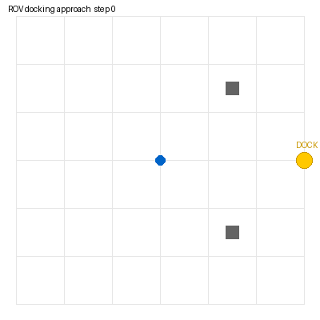

水下 ROV 对接任务：声呐扫描 + CNN 标记检测 + 逼近导航
包名：
mjc_rov_docking_nav仿真环境：MuJoCo 3.1.x + ROS 2 Humble（Ubuntu 20.04.6，Python 3.8.10） 神经网络：1D-CNN（声呐剖面二分类）
1. 概述与目标
本模块模拟 ROV 在水池中寻找并靠近水下对接站。与"声呐分类"和"PPO 跟踪"不同，这里关注的是对接任务：前视声呐扫描环境，CNN 判断前方是否有对接标记，检测到则自主逼近。
核心任务： 1. MuJoCo 水池场景：对接站（黄色标记柱）+ 两个障碍物 2. 模拟前视声呐扫描：32 个角度的距离剖面 3. 1D-CNN 判断声呐剖面中是否有对接标记 4. ROS 节点：检测到标记则发布前进推力
2. 神经网络
Input (1×32)
├─ Conv1d(1→16, 3) + ReLU + MaxPool → 16×16
├─ Conv1d(16→32, 3) + ReLU + MaxPool → 32×8
├─ Linear(256→64) + ReLU
└─ Linear(64→2) # 0=无标记, 1=有标记3. 实测结果
[train] loss 0.6947 → 0.2769
[test] 对接标记检测准确率: 0.860 (172/200)
4. ROS 接口
| 话题 | 类型 | 说明 |
|---|---|---|
/rov_dock/odom |
nav_msgs/Odometry | ROV 位姿 |
/rov_dock/sonar_scan |
std_msgs/Float32MultiArray | 32 维声呐距离剖面 |
/rov_dock/cmd_vel |
geometry_msgs/Twist | 前进推力 |
5. 运行步骤
colcon build --symlink-install --packages-select mjc_rov_docking_nav
source install/setup.bash
bash main.sh
ros2 launch mjc_rov_docking_nav main.launch.py